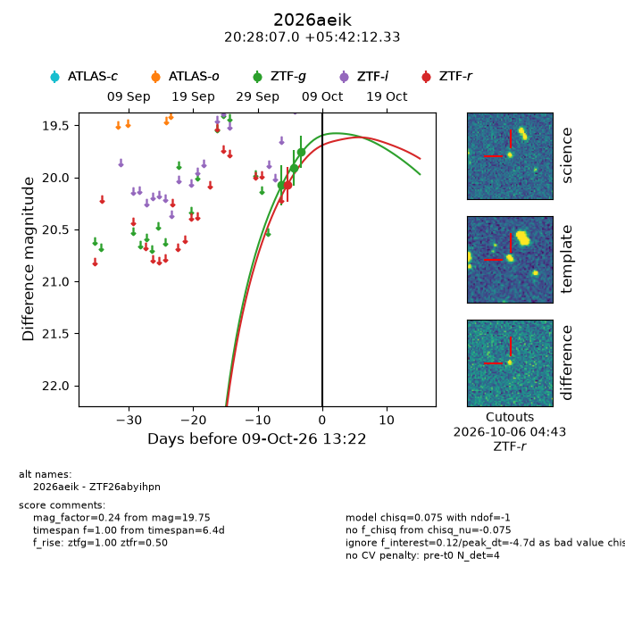
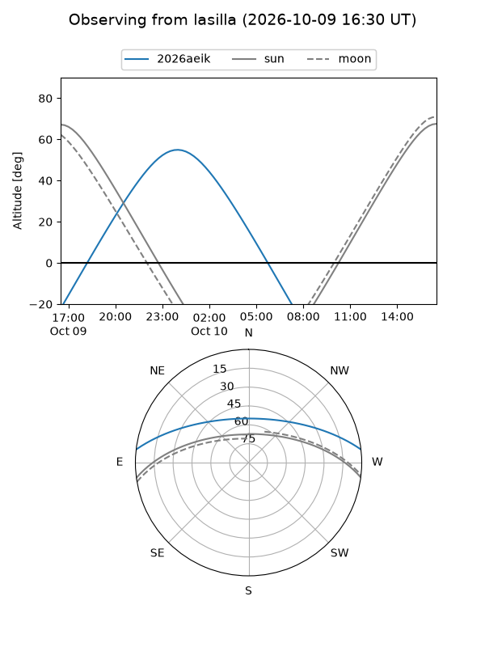
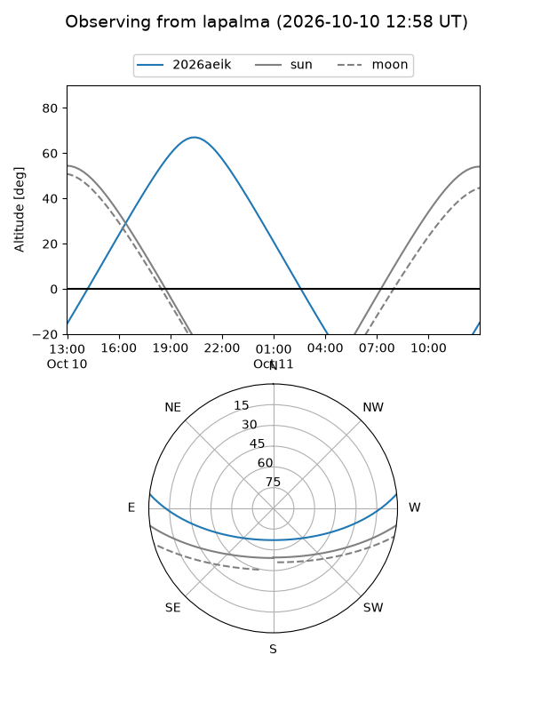
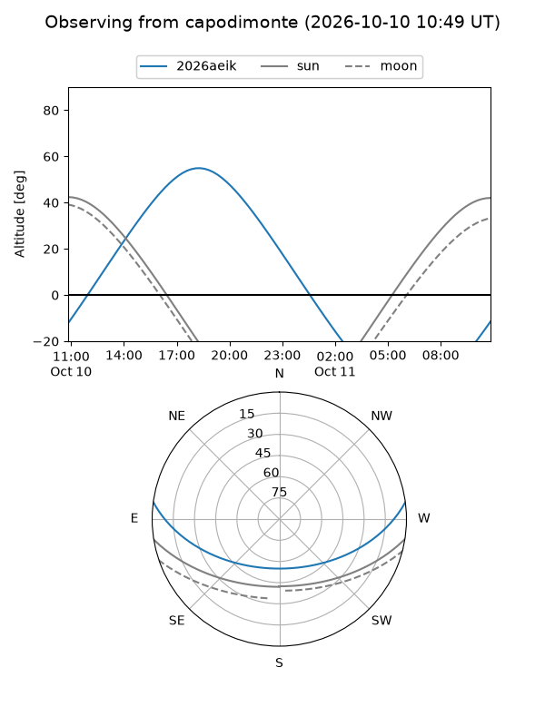
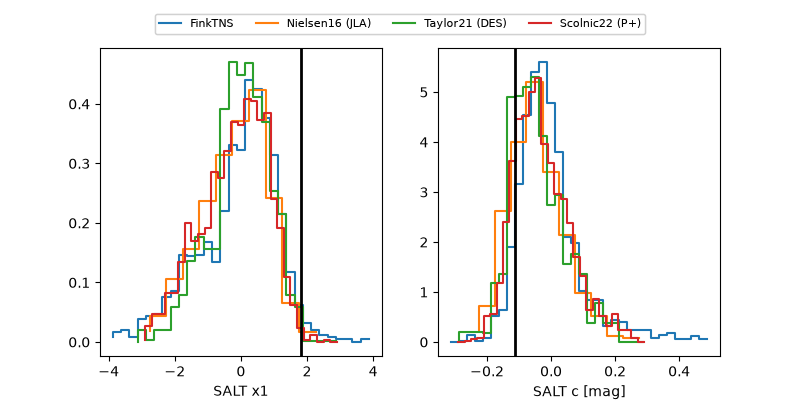

2026aeik
Target 2026aeik at 2026-10-09 13:25
Aliases and brokers:
FINK-ZTF: ztf.fink-portal.org/ZTF26abyihpn
Lasair-ZTF: lasair-ztf.lsst.ac.uk/objects/ZTF26abyihpn
ALeRCE-ZTF: alerce.online/object/ZTF26abyihpn
YSE-PZ: ziggy.ucolick.org/yse/transient_detail/2026aeik
TNS name: wis-tns.org/object/2026aeik
Direct TNS query: direct search
alt names
ZTF26abyihpn (ztf,fink_ztf)
2026aeik (tns,yse)
Coordinates:
equatorial (ra, dec) = 307.0294,+5.70342
equatorial (HMS+DMS) = 20:28:07.05,+05:42:12.33
galactic (l, b) = (49.7397,-18.49855)
Flags:
peak dt: -4.7
Photometry:
last ztfg=19.75, ztfr=20.07
3 ztfg, 1 ztfr detections
Lightcurve

Visibility



Additional plots
